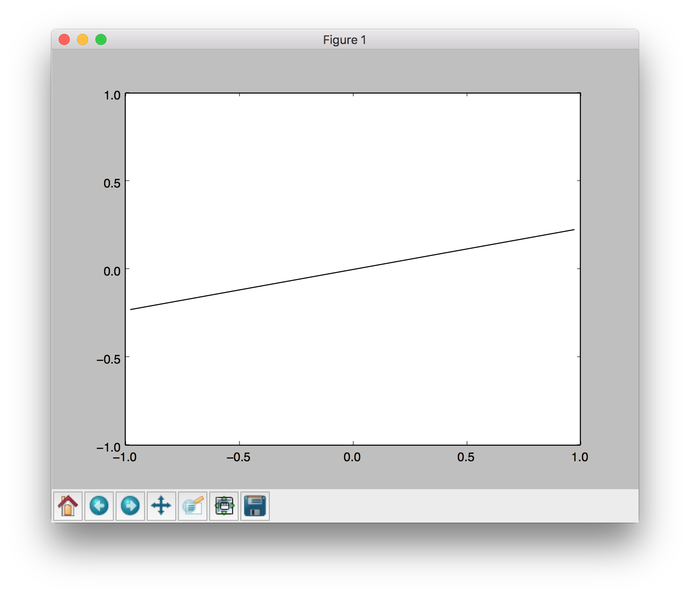

This website contains materials from a past semester. Information, assignments, and announcements may no longer be relevant. Please refer to the current semester's site for up-to-date content.
Project 0: Python, Setup, & Autograder Tutorial
Table of contents
- Introduction
- Python Installation
- Workflow/ Setup Examples
- Python Basics
- Autograding
- Q1: Addition
- Q2: buyLotsOfFruit function
- Q3: shopSmart function
- Submission
Introduction
Projects in this class use Python 3.
Project 0 will cover the following:
- Instructions on how to set up Python,
- Workflow examples,
- A mini-Python tutorial,
- Project grading: Every project’s release includes its autograder that you can run locally to debug. When you submit, the same autograder is ran.
Files to Edit and Submit: You will fill in portions of addition.py, buyLotsOfFruit.py, and shopSmart.py in tutorial.zip during the assignment. Once you have completed the assignment, you will submit these files to Gradescope (for instance, you can upload all .py files in the folder). Please do not change the other files in this distribution.
Evaluation: Your code will be autograded for technical correctness. Please do not change the names of any provided functions or classes within the code, or you will wreak havoc on the autograder. However, the correctness of your implementation – not the autograder’s judgements – will be the final judge of your score. If necessary, we will review and grade assignments individually to ensure that you receive due credit for your work.
Academic Dishonesty: We will be checking your code against other submissions in the class for logical redundancy. If you copy someone else’s code and submit it with minor changes, we will know. These cheat detectors are quite hard to fool, so please don’t try. We trust you all to submit your own work only; please don’t let us down. If you do, we will pursue the strongest consequences available to us.
Getting Help: You are not alone! If you find yourself stuck on something, contact the course staff for help. Office hours, section, and the discussion forum are there for your support; please use them. If you can’t make our office hours, let us know and we will schedule more. We want these projects to be rewarding and instructional, not frustrating and demoralizing. But, we don’t know when or how to help unless you ask.
Discussion: Please be careful not to post spoilers.
Python Installation
You need a Python (3.6 or higher) distribution and either Pip or Conda. Many of you will already have Python installed from CS 61A (so just missing Pip), or Anaconda from EECS 16A.
To check if you meet our requirements, you should open the terminal run python -V and see that the version is high enough. Then, run pip -V and conda -V and see that at least one of these works and prints out some version of the tool. On some systems that also have Python 2 you may have to use python3 and pip3 instead of the aforementioned.
If you need to install things, we recommend Python 3.9 and Pip for simplicity. If you already have Python, you just need to install Pip.
On Windows either Windows Python or WSL2 can be used. WSL2 is really nice and provides a full Linux environment, but takes up more space; Linux/ MacOS (both Unix) is used much more often for computer science than Windows because it is more convenient and development tools are also more reliable. It doesn’t make a difference for this class but is a good tool to learn to use if you are interested and have the time.
If you choose to use Conda via Anaconda or Miniconda, these already come with Python and Pip so you would install just the one thing.
- Install Python:
- For Windows and MacOS, we recommend using an official graphical installer: download and install Python 3.9.
- For Linux, use a package manager to install Python 3.9.
- Install Pip:
- For Windows and MacOS, run
python -m ensurepip --upgrade. - For Linux, use a package manager to install Pip for Python 3.
- For Windows and MacOS, run
Dependencies installation
First, go through the Autograding section to understand how to work with tutorial.zip and the autograder.py inside.
The machine learning project has additional dependencies. It’s important to install them now so that if there is an issue with the Python installation, we don’t have to come back or redo the installation later.
On Conda installations, the dependencies should already be there. You can test by confirming that this command produces the below window pop up where a line segment spins in a circle.
python autograder.py --check-dependencies

The libararies needed and the corresponding commands are:
- numpy, which provides support for fast, large multi-dimensional arrays.
- matplotlib, a 2D plotting library.
pip install numpy
pip install matplotlib
After these, use the python autograder.py --check-dependencies command to confirm that everything works.
Troubleshooting
Some installations will have python3 and pip3 refer to what we want to use. Also, there may by multiple installations of python that may complicate which commands install where.
python -V # version of python
pip -V # version of pip, and which python it is installing to
which python # where python is
If there is a tkinter import error, it’s likely because Python is atypical, and from Homebrew. Uninstall that and install python from Homebrew with tkinter support, or use the recommended graphical installer.
Workflow/ Setup Examples
You are not expected to use a particular code editor or anything, but here are some suggestions on convenient workflows (you can skim both for half a minute and choose the one that looks better to you):
- GUI and IDE, with VS Code shortcuts. You are highly encouraged to read the Using an IDE section if using an IDE to learn convenient features.
- In terminal, using Unix commans and Emacs (this is fine to do on Windows too). Useful to be able to edit code on any machine without setup, and remote connecting setups such as using the instructional machines.
Python Basics
If you’re new to Python or need a refresher, we recommend going through the Python basics tutorial.
Autograding
To get you familiarized with the autograder, we will ask you to code, test, and submit your code after solving the three questions.
You can download all of the files associated the autograder tutorial as a zip archive: tutorial.zip (note this is different from the zip file used in the UNIX and Python mini-tutorials, python_basics.zip). Unzip this file and examine its contents:
[cs188-ta@nova ~]$ unzip tutorial.zip
[cs188-ta@nova ~]$ cd tutorial
[cs188-ta@nova ~/tutorial]$ ls
addition.py
autograder.py
buyLotsOfFruit.py
grading.py
projectParams.py
shop.py
shopSmart.py
testClasses.py
testParser.py
test_cases
tutorialTestClasses.py
This contains a number of files you’ll edit or run:
addition.py: source file for question 1buyLotsOfFruit.py: source file for question 2shop.py: source file for question 3shopSmart.py: source file for question 3autograder.py: autograding script (see below)
and others you can ignore:
test_cases: directory contains the test cases for each questiongrading.py: autograder codetestClasses.py: autograder codetutorialTestClasses.py: test classes for this particular projectprojectParams.py: project parameters
The command python autograder.py grades your solution to all three problems. If we run it before editing any files we get a page or two of output:
Click to see full output of python autograder.py
[cs188-ta@nova ~/tutorial]$ python autograder.py
Starting on 1-21 at 23:39:51
Question q1
===========
*** FAIL: test_cases/q1/addition1.test
*** add(a, b) must return the sum of a and b
*** student result: "0"
*** correct result: "2"
*** FAIL: test_cases/q1/addition2.test
*** add(a, b) must return the sum of a and b
*** student result: "0"
*** correct result: "5"
*** FAIL: test_cases/q1/addition3.test
*** add(a, b) must return the sum of a and b
*** student result: "0"
*** correct result: "7.9"
*** Tests failed.
### Question q1: 0/1 ###
Question q2
===========
*** FAIL: test_cases/q2/food_price1.test
*** buyLotsOfFruit must compute the correct cost of the order
*** student result: "0.0"
*** correct result: "12.25"
*** FAIL: test_cases/q2/food_price2.test
*** buyLotsOfFruit must compute the correct cost of the order
*** student result: "0.0"
*** correct result: "14.75"
*** FAIL: test_cases/q2/food_price3.test
*** buyLotsOfFruit must compute the correct cost of the order
*** student result: "0.0"
*** correct result: "6.4375"
*** Tests failed.
### Question q2: 0/1 ###
Question q3
===========
Welcome to shop1 fruit shop
Welcome to shop2 fruit shop
*** FAIL: test_cases/q3/select_shop1.test
*** shopSmart(order, shops) must select the cheapest shop
*** student result: "None"
*** correct result: "<FruitShop: shop1>"
Welcome to shop1 fruit shop
Welcome to shop2 fruit shop
*** FAIL: test_cases/q3/select_shop2.test
*** shopSmart(order, shops) must select the cheapest shop
*** student result: "None"
*** correct result: "<FruitShop: shop2>"
Welcome to shop1 fruit shop
Welcome to shop2 fruit shop
Welcome to shop3 fruit shop
*** FAIL: test_cases/q3/select_shop3.test
*** shopSmart(order, shops) must select the cheapest shop
*** student result: "None"
*** correct result: "<FruitShop: shop3>"
*** Tests failed.
### Question q3: 0/1 ###
Finished at 23:39:51
Provisional grades
==================
Question q1: 0/1
Question q2: 0/1
Question q3: 0/1
------------------
Total: 0/3
Your grades are NOT yet registered. To register your grades, make sure
to follow your instructor's guidelines to receive credit on your project.
For each of the three questions, this shows the results of that question’s tests, the questions grade, and a final summary at the end. Because you haven’t yet solved the questions, all the tests fail. As you solve each question you may find some tests pass while other fail. When all tests pass for a question, you get full marks.
Looking at the results for question 1, you can see that it has failed three tests with the error message “add(a, b) must return the sum of a and b”. The answer your code gives is always 0, but the correct answer is different. We’ll fix that in the next tab.
Q1: Addition
Open addition.py and look at the definition of add:
def add(a, b):
"Return the sum of a and b"
"*** YOUR CODE HERE ***"
return 0
The tests called this with a and b set to different values, but the code always returned zero. Modify this definition to read:
def add(a, b):
"Return the sum of a and b"
print("Passed a = %s and b = %s, returning a + b = %s" % (a, b, a + b))
return a + b
Now rerun the autograder (omitting the results for questions 2 and 3):
[cs188-ta@nova ~/tutorial]$ python autograder.py -q q1
Starting on 1-22 at 23:12:08
Question q1
===========
*** PASS: test_cases/q1/addition1.test
*** add(a,b) returns the sum of a and b
*** PASS: test_cases/q1/addition2.test
*** add(a,b) returns the sum of a and b
*** PASS: test_cases/q1/addition3.test
*** add(a,b) returns the sum of a and b
### Question q1: 1/1 ###
Finished at 23:12:08
Provisional grades
==================
Question q1: 1/1
------------------
Total: 1/1
You now pass all tests, getting full marks for question 1. Notice the new lines “Passed a=…” which appear before “*** PASS: …”. These are produced by the print statement in add. You can use print statements like that to output information useful for debugging.
You may see the message “Your grades are NOT yet registered. To register your grades, make sure to follow your instructor’s guidelines to receive credit on your project.” This is okay. Remember that in order to receive credit, you must submit to Gradescope.
Q2: buyLotsOfFruit function
Implement the buyLotsOfFruit(orderList) function in buyLotsOfFruit.py which takes a list of (fruit,numPounds) tuples and returns the cost of your list. If there is some fruit in the list which doesn’t appear in fruitPrices it should print an error message and return None. Please do not change the fruitPrices variable.
Run python autograder.py until question 2 passes all tests and you get full marks. Each test will confirm that buyLotsOfFruit(orderList) returns the correct answer given various possible inputs. For example, test_cases/q2/food_price1.test tests whether:
Cost of [('apples', 2.0), ('pears', 3.0), ('limes', 4.0)] is 12.25
Q3: shopSmart function
Fill in the function shopSmart(orderList,fruitShops) in shopSmart.py, which takes an orderList (like the kind passed in to FruitShop.getPriceOfOrder) and a list of FruitShop and returns the FruitShop where your order costs the least amount in total. Don’t change the file name or variable names, please. Note that we will provide the shop.py implementation as a “support” file, so you don’t need to submit yours.
Run python autograder.py until question 3 passes all tests and you get full marks. Each test will confirm that shopSmart(orderList,fruitShops) returns the correct answer given various possible inputs. For example, with the following variable definitions:
orders1 = [('apples', 1.0), ('oranges', 3.0)]
orders2 = [('apples', 3.0)]
dir1 = {'apples': 2.0, 'oranges': 1.0}
shop1 = shop.FruitShop('shop1',dir1)
dir2 = {'apples': 1.0, 'oranges': 5.0}
shop2 = shop.FruitShop('shop2', dir2)
shops = [shop1, shop2]
test_cases/q3/select_shop1.test tests whether: shopSmart.shopSmart(orders1, shops) == shop1
and test_cases/q3/select_shop2.test tests whether: shopSmart.shopSmart(orders2, shops) == shop2
Submission
In order to submit your project upload the Python files you edited. For instance, use Gradescope’s upload on all .py files in the project folder.